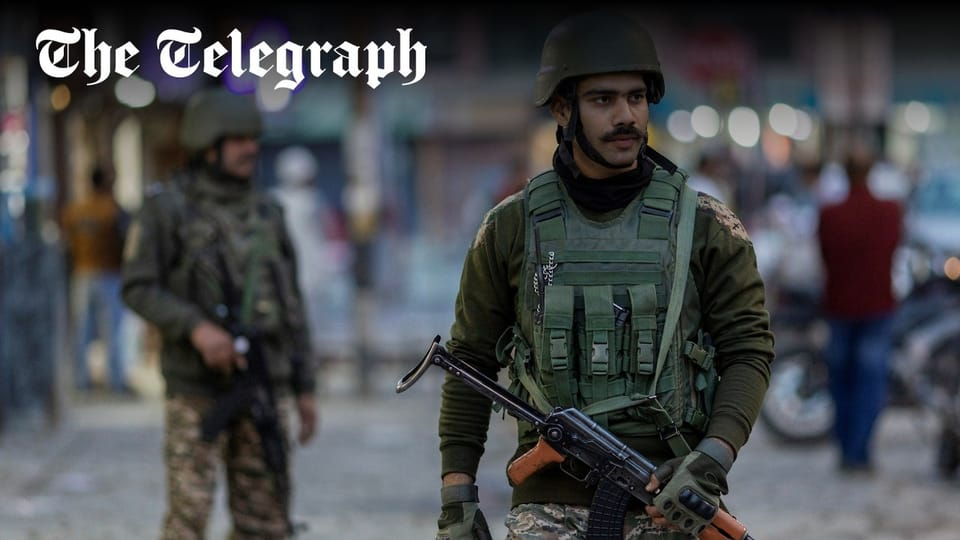

世界苦茶04月26日新闻 | 46条 | 中国豁免部分美国商品关税

中国豁免部分美国商品关税 | 印巴爆发边境冲突 | DOGE运营百日一片混乱 | 美ICE发规模撤销学生合法签证 | 中央政治局经济会议没有实际举措
三个水枪手
苦茶数据
美元兑人民币：7.28（昨日7.29，前日7.29）
美元兑日元：143.96（昨日142.95，前日142.63）
上证指数：休市（昨日3295，前日3303）
标普500指数：休市（昨日5525，前日5484）
比特币：94918（昨日93149，前日93149）
布伦特原油：66.87（昨日66.88，前日66.03）
中国新闻
• 特朗普称习近平曾致电 ：美国总统特朗普就关税问题表明，中国国家主席习近平已向他致电。特朗普在《时代》周刊星期五发表的专访报道中谈及关税问题时说，习近平已向他致电，但他并未透露两人通话的日期和内容。《时代》周刊高级政治记者科特利萨和总编辑雅各布斯在专访中问特朗普：“如果习近平不打电话给你，你会打给他吗？”
• 中韩人才争夺加剧 ：韩国媒体称，中国正通过引进韩国顶尖人才，与美国争夺高科技主导权。两名韩国国宝级半导体专家在退休后受冷落，近日已被中国高校任用。据韩国《中央日报》报道，知名碳纳米管专家李永熙已受聘湖北工业大学，任职当地的半导体与量子研究所。理论物理学家、原韩国高等科学研究院副院长李淇明，去年也在退休后前往北京雁栖湖应用数学研究院任教。李永熙曾担任韩国基础科学研究院纳米结构物理研究团团长，带领团队在碳纳米管、石墨烯、水分解催化剂、二维结构半导体等领域取得诸多科研成果。自2018年以来，他持续入选全球论文被引用频次前1%的顶尖学者行列。他在2023年正式退休后，研究团队也随之解散。
• 中国海警登铁线礁宣示主权 ：中国官媒称，中国海警本月中旬登上南中国海的铁线礁，并展示五星红旗。《环球时报》星期四发文称，该报获得一组独家照片显示，今年4月中旬，中国海警在南中国海铁线礁实施海上管控，行使主权管辖权。期间，中国海警执法员登上铁线礁开展岛礁检查，对相关非法活动进行取证。报道称，此次维权执法行动中，中国海警执法员登上铁线礁进行巡查，并对菲律宾方面“非法活动的相关情况进行视频取证”。此外，中国海警执法员还在铁线礁展示五星红旗宣示主权，并清理铁线礁上残留的塑料瓶、木棍和其他碎片垃圾。
• 猿辅导员工猝死事件 ：中国在线教育公司猿辅导此前传出一名员工加班后猝死在办公室，猿辅导星期五正式回应确认这一消息并表示，该员工所在团队，当日并无加班安排。猿辅导回应称，星期三，武汉公司员工李某某突发意外不幸离世，我们和员工的亲人十分悲痛。李某某是公司优秀的员工，加入公司的五年时间，工作上爱岗敬业，有责任感，业绩表现一贯保持优秀。
亚太印太新闻
• 印巴克什米尔再起冲突 ：印度和巴基斯坦士兵4月25日凌晨在克什米尔地区发生交火，目前没有人员伤亡报告。印度军官称，巴基斯坦军队24日晚些时候违反停火协议，从巴控克什米尔地区两国实控线附近多个哨所向印度阵地开火，印度军队予以回击。没有人员伤亡报告。巴基斯坦军官称，巴印两军于25日1时30分至2时30分许发生间歇性交火，地点位于巴控克什米尔地区杰赫勒姆谷地的两国实控线附近。克什米尔南部居民和警方表示，印度士兵在两名疑似参与22日袭击的武装分子的家中引爆炸药。当局表示，正在调查涉嫌参与袭击的两名当地男子和两名巴基斯坦公民。
• 巴基斯坦副总理称帕哈尔加姆恐怖分子为“自由战士” ： 尽管巴基斯坦谴责最近在查谟和克什米尔地区帕哈尔加姆发生的袭击事件，并否认窝藏恐怖组织，但巴基斯坦外交部长伊沙克·达尔周四称袭击者为“自由战士”，就在这位部长发表上述言论的前一天，印度宣布对巴基斯坦采取一系列外交攻势，并采取多项反制措施，将这些袭击与伊斯兰堡联系起来。其中最严厉的措施是暂停1960年的《印度河水域条约》并取消所有签发给巴基斯坦国民的签证。
• 陈水扁言论引绿营争议 ：台湾蓝绿阵营罢免攻防持续，民进党籍前总统陈水扁日前提出“不能说意见不一样，就是XX同路人”，遭到绿营支持者批评。陈水扁的昔日副手吕秀莲为他感到不平，希望真正爱好民主的人要有雅量。综合TVBS新闻网和ETToday新闻云报道，陈水扁日前在公开演讲时提到，民主时代不应有一言堂，不能因为意见不一样，就说是“XX同路人”，此番言论引起绿营支持者不满，他的脸书因此有不少网友留言批评。此外，台湾前副总统吕秀莲和总统府资政谢长廷等人，先前也因为对大罢免提出不同看法，相继遭到绿营支持者批评。吕秀莲星期四在一档政论节目中说，台湾在2000年政党轮替，是全世界少有的和平交接。当时民进党虽然获胜，但陈水扁姿态放得很低，因为没当过总统，对前总统李登辉相当尊敬，也会去请教敌对势力和在野党。 “因为国家不是你家，也不是我家，国家是你我他的家，当家的人就要有这样的想法。”
• 台湾收紧陆证认定 ：台湾再度收紧民众申领中国大陆证照的规定，持有大陆定居证的台湾民众也触犯相关法令，将丧失台湾身份。综合《旺报》与《联合报》报道，台湾行政院公报显示，陆委会近日对《两岸条例》当中规定发布解释函令称，为确保两岸人员单一身份制度，两岸条例规定台湾人民不得在大陆地区“设有户籍”，或领用大陆地区护照，否则将丧失台湾身份。陆委会称，“设有户籍”的判断，除持有大陆居民身份证外，也包括持有大陆的定居证。
• 台北法院羁押蓝营主委 ：台北地方法院星期五重开羁押庭，以涉嫌重大、且有串供灭证可能为由，收押台湾在野的国民党台北市党部主委黄吕锦茹。综合台湾《联合报》《中国时报》《自由时报》等报道，此前，台北地检署侦办蓝营罢免民进党立委吴思瑶、吴沛忆的连署书疑似伪造文书案，向台北地院声请羁押禁见黄吕锦茹。台北地院以证据不足，当庭释放黄吕锦茹。台北地检署不服抗告，台湾高等法院星期四认定原裁定不当，撤销发回台北地院更裁。台北地院星期五上午10时重开羁押庭，经过检辩双方两小时攻防后，台北地院裁定黄吕锦茹羁押禁见。
• 韩国检方重查金建希案 ：韩国检方决定，对前总统尹锡悦的夫人金建希涉嫌操纵股价一案重新启动调查。韩联社报道，韩国首尔高等检察厅星期五宣布，决定重新调查前第一夫人金建希涉嫌参与操纵德意志汽车公司股价一案。报道称，金建希涉嫌在德意志汽车公司前会长全五洙2009年至2012年指示操盘手操纵股价过程中，为其提供资金支持。
• 缅甸停火期间仍空袭 ：联合国和危机监测机构数据显示，尽管缅甸军政府在3月大地震后宣布临时停火，军方仍在实施空袭和炮击等致命军事行动。路透社报道，缅甸中部实皆省3月28日发生7.7级地震，造成数千人死亡。军政府4月初宣布停火20天，后又于星期二宣布进一步延长临时停火到4月30日，以便推进灾区救援和重建工作。然而联合国未公开的数据显示，战斗仍在持续。路透社对冲突监察组织武装冲突地点和事件数据项目的数据进行分析后发现，自军缅甸军政府宣布临时停火以来，缅军空袭频率较此前六个月有所增加。 （翻評：獨裁政府的停火，是世界上最粗淺的謊言之一。）
• 泰国首相因高烧入院 ：泰国政府发言人吉拉育星期五说，泰国首相佩通坦因高烧于星期四深夜入院，目前正接受全面身体检查。现年38岁的佩通坦在结束为期两天的柬埔寨官方访问后返抵曼谷，随后出现发烧症状。吉拉育指出，佩通坦原定于星期五的所有公开活动将延期，或由其他高级官员代为出席。
• 大阪拟禁老年人提款时通话 ：为应对日益猖獗的诈骗活动，日本西部大阪市政府拟实施新规，禁止老年人在使用自动提款机时接打电话。法新社报道，去年，日本全国由犯罪团伙策划的有组织诈骗案，造成高达722亿日元的损失，达到创纪录水平。诈骗分子经常对老年人出手，冒充亲属、警察或律师，诱骗老人提取现金或转账。警方称，大阪是全国有组织诈骗案件第二高发地区，仅次于首都东京。
• 日本推蓝色罚单管理骑行 ：日本警方宣布，日本将从2026年4月1日起实施修订后的《道路交通法》，对骑行时打手机、闯红灯等轻微交通违法行为开具罚款单。新法旨在应对违规骑行带来的安全隐患，提升城市交通秩序。共同社报道，根据新法规，年满16岁的骑行者如违反交通规则，将可被警方开具“蓝色罚单”。与现行的“红色罚单”不同，蓝色罚单仅需缴纳罚款，便可免于被起诉，适用范围超过100项违法行为。目前，日本仅对约20项严重违法行为开具红色罚单，例如严重醉酒骑行。红色罚单通常涉及刑事调查，不仅程序繁琐，也给执法与当事人双方带来较大负担。警方说，引入蓝色罚单制度将简化执法流程，提高处理效率。
科技新闻
• 美国放宽自动驾驶规范 ：特朗普政府星期四宣布，将放宽部分针对人类驾驶员设计的安全规范，并简化事故通报机制，以加速自动驾驶汽车部署，并提升本土车企在国际市场的竞争力。路透社报道，美国运输部长达菲说，新框架旨在为自动驾驶技术“清除阻碍”，协助美国车厂在与中国企业的技术竞赛中抢占先机。“本届政府明白我们正与中国展开创新竞赛，事关重大。新框架将大幅削减繁文缛节。”根据新规，一些不符合传统联邦安全标准的自动驾驶车辆将被允许上路，这些标准包括必须配备后视镜，或刹车踏板等人类驾驶所需配置。同时，较轻微的交通事故可按月汇报，财产损失门槛也将重新设定，以便厘清哪些事故需强制通报。
• 英特尔营收超预期仍亏损 ：晶片制造商英特尔第一季度营收达到127亿美元，超出市场预期的123亿美元。不过，本季度净亏损达8亿美元，比去年同期扩大115%。目前，公司正准备采取一系列重组计划，其中包括裁员，以削减成本并调整业务战略。路透社星期五报道，英特尔将今年运营支出目标从原本的175亿美元下调至170亿美元，并且计划将2026年的开支进一步减少至160亿美元。
• 美国施压欧盟AI准则 ：美国政府正在向欧洲施压，要求其放弃一项规则手册，该规则手册将迫使先进人工智能开发商遵守更严格的透明度、风险缓解和版权规则标准。美国政府驻欧盟代表团已联系欧盟委员会，反对该人工智能行为准则。知情人士表示，这封信反对以当前通过形式该准则，并且已发送给多个欧洲国家政府。欧盟委员会发言人托马斯·雷尼尔证实收到了这封信。该准则仍在最终定稿中，是一项自愿措施，专为科技公司提供一个遵守欧盟《人工智能法案》的框架。违反人工智能法案将面临高达公司年销售额7%的罚款，但批评人士表示，这些指导方针超出了法案的字面意义并且创造了新的、繁琐的监管要求。
• 中国AI智能体公司Manus融资7500万美元： 通用型AI智能体Manus AI背后的中国创业公司蝴蝶效应完成了一轮新融资。该融资由美国硅谷知名风投公司Benchmark领投，所筹资金将用于探索使用AI智能体系统替代人类执行日常任务。据知情人士透露，来自硅谷的Benchmark与几家蝴蝶效应的现有投资者共同参与了这轮7500万美元的融资。使得蝴蝶效应估值飙升了大约四倍，达到近五亿美元。蝴蝶效应计划利用新筹集的资金将其服务拓展到美国、日本和中东等其他市场。今年3月，Manus预览了一款被它称之为“通用型AI智能体”的产品，能够根据基本指令完成简历筛选、旅行规划和股票分析等任务。
• 苹果计划在印度组装所有销往美国的iPhone： 据知情人士透露，由于特朗普总统的贸易战迫使这家科技巨头远离中国市场，苹果计划最早于明年起将所有销往美国的iPhone转由印度完成组装。这一举措建立在苹果公司多元化供应链战略的基础上，但其步伐比投资者预想的更进一步、更快，目标是到2026年底，美国每年销售的6000多万部 iPhone 全部从印度采购。这一目标意味着苹果公司将把印度的iPhone产能翻倍，在特朗普宣布加征关税导致苹果公司市值蒸发7000亿美元之后，该公司急于将印度制造的iPhone出口到美国，以避免当时对中国征收的更高关税。
• 字节跳动正在考虑在巴西建设数据中心： 三位知情人士称，短视频平台TikTok的母公司字节跳动正在考虑在巴西建设大型数据中心，希望能善加利用巴西东北岸丰富的风能资源。两位消息人士称，字节跳动正与巴西可再生能源生产商 Casa dos Ventos 商讨合作，在塞阿拉州的佩森港口综合体建设一座大型数据中心。其中一位消息人士说，双方初期谈判重点是为数据中心提供 300兆瓦的发电量，第二阶段可能拓展至 900兆瓦。另一名消息人士则说，该项目的总用电量需求可能接近一吉瓦。因为附近有海底电缆登陆站而且该地区可再生能源发电集中，佩森被认为是巴西数据中心的理想选址。
财经新闻
• 中国豁免部分美商品关税 ：中国据报已豁免部分美国商品的高额关税。中国商务部4月23日召开外资企业圆桌会，交流加征关税给在华外资企业投资经营带来的影响。副部长凌激表示，中国将更加主动积极为外资企业在华生产经营排忧解难，努力保障产供链稳定畅通，推动解决外资企业问题诉求。知情人士称，中国商务部的工作组正在收集豁免关税的项目清单并要求公司提交申请。坊间亦流传一份尚无法核实的考虑免征关税的131类产品清单。中国美国商会总裁何迈可称，中国政府询问公司是否存在不可替代的美国商品。中国欧盟商会已向商务部提出关税豁免事宜，正等待回应。何迈可说，部分制药公司已可以无关税地向中国进口药品。法国赛峰飞机发动机公司称，中国已对发动机、起落架等航空设备部件给予一定数量的关税豁免。一家存储芯片设计公司称，中国半导体行业协会通知他们，八种类型的微芯片进口被豁免关税。
• 中共中央政治局4月25日开会研究经济形势，认为经济向好的基础还需要进一步稳固，外部冲击影响加大，要强化底线思维，充分备足预案： 要统筹国内经济工作和国际经贸斗争，着力稳就业、稳企业、稳市场、稳预期。加强超常规逆周期调节，全力巩固经济发展和社会稳定的基本面。 适时降准降息。创设新的结构性货币政策工具，设立新型政策性金融工具，支持科技创新、扩大消费、稳定外贸等。提高中低收入群体收入，大力发展服务消费。尽快清理消费领域限制性措施，设立服务消费与养老再贷款。“两新”扩围提质。创新推出债券市场的“科技板”。优化存量商品房收购政策，持续巩固房地产市场稳定态势。持续稳定和活跃资本市场。对受关税影响较大的企业，提高失业保险基金稳岗返还比例。
• 商务部4月24至25日开“全国贸易摩擦应对工作会议”，认为贸易摩擦进入高强度阶段，要坚定信心、保持定力、讲究策略： 要坚持系统观念，增强底线思维和极限思维，着力防范化解贸易风险。国务院4月22日公布第八批跨境电商综合试验区：海南全岛，秦皇岛、保定，二连，丹东，滁州，三明，开封、新乡，鄂州，邵阳，梧州、北海、防城港，广安、博尔塔拉州。区内零售出口货物免征增值税和消费税，可按4%核定征收企业所得税。 （翻评：第一个贸易战后的对企业让利措施。）
• 特朗普拟设贸易谈判新框架 ：消息人士称，美国特朗普政府计划进行分阶段的贸易谈判，采用一个新的谈判版模为美国与世界各国和地区的对等关税谈判设定一套通用条款。《华尔街日报》星期五报道，据了解一份谈判条款草案的人士透露，为简化美国总统特朗普所谓的对等关税谈判，美国官员计划使用贸易代表办公室制定的一个框架，该框架列出了谈判的广泛类别。消息人士说，这些谈判类别包括：关税和配额；非关税贸易壁垒，例如针对美国商品的监管；数码贸易；产品原产地规则；经济安全及其他商业问题。
• 英财政部长批中国贸易顺差 ：英国财政部长里夫斯赞同美国总统特朗普对全球贸易失衡的批评，并指责中国长期存在巨额贸易顺差。她也呼吁美国放松关税，通过多边主义机制促使中国遵守规则。彭博社报道，里夫斯星期四在美国华盛顿出席国际货币基金组织（IMF）关于全球经济的主题辩论。她在讲话中表明，美国寻求在国际贸易中实现更大公平是正确的，并特别指出中国是令人担忧的对象。不过她也强调，美国应该通过多边主义机制而非关税手段来改革国际贸易体系，并促使中国遵守规则。
• 印尼称美谈判优先国家利益 ：印度尼西亚经济事务统筹部长艾尔朗加说，在与美国就关税问题的谈判中，印尼将国家利益置于优先位置，致力于建立“公平对等”的贸易关系。路透社报道，艾尔朗加与财政部长慕燕妮目前正在美国，就美方拟对印尼征收32%关税一事进行磋商。相关关税已暂缓执行90天。艾尔朗加星期五在记者会上指出，谈判议题包括能源供应、印尼商品进入美国市场、印尼国内监管改革，以及关键矿产与技术合作，涵盖农业、医疗与可再生能源领域。他强调，印尼对Visa与万事达等美国支付公司持开放态度。
• 中国部分芯片关税豁免 ：中国媒体称，中国免除部分流片地为美国的晶片进口加征关税，但暂时不包括存储晶片。据《财经》报道，多名有晶片进口需求的中国科技公司人士称，有八个与半导体、集成电路相关的税号被免除加征关税，但暂时不包含存储晶片，意味着部分流片地为美国的晶片进口加征关税从125%降为0。中国半导体行业协会4月11日曾发布通知称，根据海关总署相关规定，集成电路原产地按照四位税则号改变原则认定，即晶片的流片地认定为原产地。按照这一规则，美国制造的晶片会被征收125%的关税。
• 特朗普签行政令促深海采矿 ：美国总统特朗普星期四签署行政令，推动深海采矿产业，旨在扩大镍、铜等关键矿产资源的开发，减少对中国供应链的依赖。路透社报道，这项行政令要求加快美国及国际水域的采矿许可审批，依据1980年《深海硬矿资源法》简化程序，同时建立外大陆架采矿机制，并加速审查国家管辖范围外海域的采矿申请。政府官员指出，美国水域内蕴藏超过10亿吨多金属结核，富含锰、镍、铜等关键矿物，若有效开发，十年内可为美国带来3000亿美元国内生产总值增量，并创造10万个就业机会。
• 美消费者信心下降 ：在经济前景不确定性升高之际，美国消费者开始收紧荷包，减少食品与日用品的开销。百事公司、Chipotle与宝洁等消费巨头近日相继下调全年预期，反映消费信心普遍走弱，特朗普政府新一轮关税政策也加剧企业成本压力。《纽约时报》报道，据美国“会议委员会”3月调查，美消费者信心指数降至2021年初以来最低水平，反映出家庭对就业和财务状况的忧虑日益加剧。百事公司周四在财报电话会议中宣布下调全年盈利预测，将原先预估的中个位数增长调降至持平，并称消费者支出放缓及全球关税上升对公司业务构成挑战。
• 哈佛拟出售10亿美元基金 ：知情人士透露，哈佛大学正就出售约10亿美元的私募股权基金份额进行深入磋商，交易已进入后期阶段。路透社报道，知情人说，这项出售计划早在去年就已启动，与美国总统特朗普近期威胁削减高等教育经费无关，主要是为优化流动性管理而作出的财务操作。哈佛管理公司正委托杰富瑞金融集团协助推进交易，潜在买家为私募股权公司莱克星顿合伙公司。此次交易或以“二级市场转让”方式进行，但具体条款尚未敲定，仍可能发生变化。
• 中企在越南受美关税影响 ：中美贸易关系紧张，近年越来越多中国企业向越南扩展业务。39岁的张春东一年前带领货叉叉新能源公司进驻越南，这家分销叉车的企业原本信心满满，但美国的关税威胁使其业务蒙上阴影。张春东说：“一些向我们订了货的厂家原本几乎要投入运作，但关税消息一传来，这些项目和购买叉车的订单都搁置了。我们本应该处于快速增长阶段，但因为受关税影响而无法实现。”在越南的许多中国企业的处境理应比在中国国内要好，尤其是直接出口到美国的企业，因为美国政府已经对许多中国产品征收高达145%的关税，现阶段对越南产品仅征收10%基准关税，46%对等关税推迟至7月才生效。越南争取在7月前同美国谈妥关税和贸易协议。
• 京东美团争夺战蒸发市值 ：中国科技公司京东发起代价高昂的争夺战，试图从外卖巨头美团手中抢走市场份额，而美团则一直在蚕食京东的电商据点。彭博社测算，两家公司互相施加伤害，总市值蒸发约700亿美元。彭博社指出，两家公司在香港上市的股票价格已较3月份高点分别下跌约30%。投资者预期，两家公司可能会进行一场旷日持久的竞争，这将损害这两家公司的盈利。分析师已下调两家公司的目标价，期权市场的防御性仓位也已增强。报道引述瑞士盈丰香港一名基金经理的观点称，短期内，双方的处境都变得更糟，而且这场战斗将持续多久尚不清楚，中国外卖市场的激烈竞争将损害京东和美团的盈利能力。
• 韩美关税谈判取得进展 ：美国财政部长贝森特说，美韩贸易会谈“非常成功”，两国正寻求在美方计划加征高额关税前找到解决路径。韩国多名部长指出，韩美双方已达成共识，将筹备一项关税协定，以在7月前推动关税豁免。路透社报道，贝森特星期四在白宫对记者说：“我们今天与韩国举行一场非常成功的双边会议……进展速度可能比我预期的更快，我们最快下周就会展开技术性磋商。”他说：“韩国方面准备充分，展现极高的专业度，接下来就看他们会否贯彻执行。”
• 华友取代LG投资印尼电池项目 ：韩国LG能源解决方案公司退出印度尼西亚的电动车电池生产项目后，中国浙江华友钴业将取而代之，成为印尼有关项目的战略投资者。印尼能源与矿产资源部长巴赫里尔星期三发声明宣布这个消息时说，更换投资者是大型项目的常见动态，并强调LG能源退出不会对项目产生重大影响，项目的基本计划和目标不变，那就是让印尼成为世界电动车产业的中心。他在声明中说：“只是投资者发生了变化，LG能源不再参与……取而代之的是中国的战略合作伙伴华友。”
• 小米被曝查工时引热议 ：中国科技巨头小米据报要求员工日均工时不低于11.5小时，工时排名靠后的会被约谈甚至劝退，在中国整治“内卷式”竞争之际引起热议。据九派新闻报道，中国职场社交平台脉脉上有贴文称，小米要求员工日均工时不低于11.5小时，低于8小时需提交说明，工时排名靠后的要被约谈甚至劝退。“小米查工时”的话题随即在中国社交平台引起热议，星期四一度登上微博热搜第一名。报道称，多名小米员工证实这一情况。小米上海公司的一名员工称，他的部门确实要求平均11.5小时，早9时上班、晚8时30分下班。
• Waymo每周有25万次自动驾驶出租车出行： 谷歌母公司Alphabet周四报告称，旗下自动驾驶汽车部门 Waymo 目前在美国每周提供超过25万次付费自动驾驶出租车服务。这一数字高于2月份的20万次，当时Waymo尚未在美国得州奥斯汀开设分部，该公司已于三月份在旧金山湾区扩张。Alphabet CEO桑达尔·皮查伊表示，Waymo在“跨地域的商业模式”方面有多种选择，这家自动驾驶出租车公司正在与打车应用优步、汽车制造商以及负责其车队运营和维护的企业建立合作伙伴关系。Waymo已在旧金山、洛杉矶、凤凰城和奥斯汀地区运营其商业无人驾驶叫车服务。
俄乌战争
• 俄指乌策划汽车炸弹袭击 ：俄罗斯指责乌克兰策划了在莫斯科地区发生的汽车炸弹袭击，导致俄军一名高级将领死亡。法新社报道，莫斯科州中部城市巴拉希哈的一栋公寓楼外，星期五发生一起汽车爆炸事件，俄罗斯武装力量总参谋部作战总局副局长、陆军作战副总参谋长莫斯卡利克在爆炸中死亡。俄外交部发言人扎哈罗娃当天晚些时候在一份声明中说：“有理由相信乌克兰的特工机构参与了此次谋杀。”
• 特朗普称可结束俄乌战争 ：美国总统特朗普重申他会结束俄乌战争，并认为俄罗斯总统普京能够实现和平。他也驳斥关于美国斡旋俄乌和谈“拖太久”的质疑。特朗普在美国《时代》周刊星期五发表的“执政百日”专访报道中，发表上述言论。俄乌战争已持续三年多，双方仍未就和平协议达成共识。周刊记者提到，特朗普曾表示会在一周内结束俄乌战争，特朗普回应说，他的确说过这话，但这是“夸张”说法。“显然，人们知道我说那句话是开玩笑，但我也说过会结束。”
• 基辅市长称或须割地求和 ：乌克兰首都基辅市长克利奇科说，乌克兰须要在与俄罗斯的和平协议中，暂时割让部分领土。克利奇科在英国广播公司星期五报道的采访中说，面对美国总统特朗普施加的让步压力，乌克兰可能不得不在与俄罗斯的和平协议中放弃部分领土。他说：“其中一个方案是……放弃领土。这不公平。但是为了和平，为了暂时的和平，这也许是一个暂时的解决方案。”
• 美欧乌和平提案差异分析 ：路透社总结了美国、欧洲和乌克兰在巴黎和伦敦的会议上提出的提议差异。在领土方面，美国中东问题特使史蒂文·威特科夫的提议呼吁美国在法律上承认俄罗斯对克里米亚的控制，并在事实上承认俄罗斯对俄军控制的乌克兰南部和东部地区的控制；欧乌的反提议将有关领土的详细讨论推迟到停火结束之后，并且未提到承认俄罗斯对乌克兰领土的控制。在安全保证方面，威特科夫的提议指出，乌克兰将获得“强大的安全保证”，欧洲和其他友好国家将作为担保方。但提议未提供更多细节。提议还表示乌克兰不会寻求加入北约；欧乌的反提议明确指出不会限制乌克兰军队和盟友在乌克兰驻军，并为乌克兰提出包括来自美国的类似北约共同防御条款一样的安全保证。在经济方面，威特科夫的提议称，作为和平协议的一部分，将取消自2014年俄罗斯吞并克里米亚以来对俄罗斯实施的制裁。威特科夫虽然提出乌克兰将获得经济补偿，但未明确资金来源；欧乌的反提议称，上述制裁需在实现可持续和平后逐渐放松，且在俄罗斯违反协议条款后可恢复。此外，乌克兰还应从被冻结的俄罗斯海外资产中获得经济赔偿。美国总统特朗普4月22日在接受《时代》采访时称：“克里米亚将继续留在俄罗斯。”威特科夫25日在莫斯科会见普京。俄罗斯方面称，会谈持续3个小时，具有“建设性”且“有用”。双方讨论了恢复俄乌直接谈判的可能性。
其他新闻
• 美国政府效率部运行接近百日，涉及14个联邦机构的20多个案例表明，人员和资金削减导致采购瓶颈和成本增加、决策瘫痪、公众等待时间延长、高薪公务员填补了低级工作，以及科技人才流失。政府效率部未提升效率反招混乱： 在社会保障局，律师、统计员等高级官员从总部被派往地区办事处，以接替那些被解雇或被买断的资深理赔处理员。但知情人士称，大多数新来的员工并不熟悉这项工作，导致依赖这些福利的残疾人和老年人的等待时间更长。社保局官员回应说，被调职的员工“对我们的项目和服务非常了解”。在国税局，两名官员称，自从取消远程办公，国税局的网络变得非常不稳定，以至于工作人员不得不使用个人热点，在税务处理高峰期电脑崩溃。美国国税局尚未回应置评请求。这些事例虽未揭示大幅削减联邦官僚机构成本和规模的项目的全面情况，但它们确实揭示了政府效率部所造成的附带损害。政府效率部网站定期更新其声称为美国纳税人节省的金额，但该网站却充斥着错误和更正。迄今为止，马斯克及其副手几乎没有提供任何具体证据来证明政府在大规模裁员和终止政府合同后如何更有效地运作。白宫发言人应询时表示，马斯克的团队“已经实现了政府技术的现代化，防止了欺诈，简化了流程，并为美国纳税人节省了数以十亿美元计的资金”。他没有提供政府计算机系统改善或劳动力效率提高的例子。政府效率部未回应置评请求。
• 美国移民与海关执法局正在撤销终止美国各地一些国际学生合法身份的决定，并恢复相关人员的签证登记： 全美1200余名国际学生在留学生和访问学者信息系统中的记录被突然删除，导致这些人员失去合法身份或被吊销签证，面临被驱逐出境的危险。许多学生只有轻微的违规行为，甚至压根不知道为何成为目标。部分学生离开美国，还有一些人躲藏起来不再上课。美国多地法官已在数十起相关诉讼中发布临时命令，暂时恢复这些学生在留学生和访问学者信息系统中的记录。政府律师4月25日传达了政府政策转向的消息。声明说，移民与海关执法局正在为在留学生和访问学者信息系统中终止记录提供框架。在相关政策发布前，留学生和访问学者信息系统中被终止合法身份人员的记录将保持有效，移民与海关执法局不会仅根据国家犯罪信息中心的调查修改该信息系统中的记录。美国国土安全部表示，移民与海关执法局并未改变任何签证撤销的做法，只是恢复了未被吊销签证的人的留学生和访问学者信息系统的记录。 （翻评：对俄罗斯和中国极端柔软，对国内移民群体非常强硬。）
• 伊朗将赴阿曼与美核谈判 ：伊朗外交部长阿拉格齐准备前往阿曼，与美国举行核谈判。法新社报道，阿拉格齐定于星期五率伊朗代表团前往阿曼，与美方于星期六举行间接会谈。伊朗外交部发言人巴盖伊说，伊朗代表团由外交核技术专家组成。美国总统特朗普的中东问题特使威特科夫，将代表美国参加会谈。
• 民主党警告不得资助挑战者 ：美国民主党正试图遏制党内挑战声浪，为2026年中期选举布局稳固基础。路透社报道，美国民主党全国委员会新任主席马丁星期四公开警告，党内高层不得资助挑战寻求连任的现任民主党议员，否则将面临被撤职的可能。马丁表示：“任何DNC官员都不应试图左右党内初选结果，无论是支持在任者，还是挑战者。”
• 美防长涉使用不安全通信 ：知情人士称，美国国防部长赫格塞思在其办公室设置不安全的互联网线路并在个人电脑上使用Signal。这增加了敏感国防信息面临潜在黑客攻击或监视的可能性，同时也缺乏联邦法律要求的记录保存的合规性。国防部发言人表示，赫格塞思“对通信系统和通道的使用是机密的”，且赫格塞思从未在政府计算机上使用过Signal。
• 美国法官被捕引发关注 ：美国联邦调查局4月25日宣布逮捕威斯康星州密尔沃基县巡回法院法官汉娜·杜根。根据联邦调查局提交法院的陈述，杜根被指控在4月18日利用陪审团的门护送名为爱德华多·弗洛雷斯-鲁伊斯的男子和他的律师离开法庭，以防止他们被捕。法庭记录显示，鲁伊斯面临与家暴有关的指控。联邦调查局局长卡什·帕特尔将鲁伊斯描述为“非法外国人”。他表示，法官的阻碍对公众造成更大的危险。执法官局发言人称，杜根25日上午被拘留，并将在密尔沃基联邦法院短暂出庭后被释放。杜根下次出庭时间为5月15日。杜根的律师在听审时说，杜根对她的逮捕表示遗憾和抗议，认为这并不是出于公共安全的考虑。 （翻评：因为协助一名一名逃脱ICE的拘捕被捕。